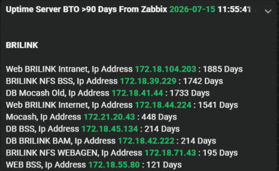

Projek Pilihan



Halo di sana! Saya seorang IT Application Operation Engineer yang bekerja di industri perbankan. Pekerjaan sehari-hari saya adalah memastikan aplikasi perbankan yang bersifat kritis berjalan dengan lancar, aman, dan tanpa hambatan (zero downtime). Saya memiliki latar belakang yang kuat dalam mengelola server Linux, basis data (MySQL & SQL Server), serta mengonfigurasi alat pemantauan seperti Zabbix dan Grafana untuk memantau performa sistem secara real-time. Saya juga senang menggunakan Python untuk mengotomatiskan tugas-tugas operasional agar berjalan lebih cepat.
Menangani tugas administrasi kantor sekaligus menyediakan dukungan IT yang komprehensif untuk jaringan komputer dan masalah teknis lainnya. Selain itu, bertindak sebagai media support yang bertanggung jawab mendokumentasikan acara dan kegiatan perusahaan.
Ditempatkan di Data Center BRI sebagai bagian dari tim operasional aplikasi. Selain mengelola aplikasi, saya juga menangani troubleshooting jika terjadi kendala. Sebelum memperbaiki masalah, saya terbiasa memeriksa log server atau basis data untuk mencari akar penyebabnya. Saya juga membangun situs web internal untuk menyimpan ID dan kata sandi yang memungkinkan tim menyalin kata sandi untuk tautan internal dan server dengan mudah tanpa menampilkan teks aslinya.
